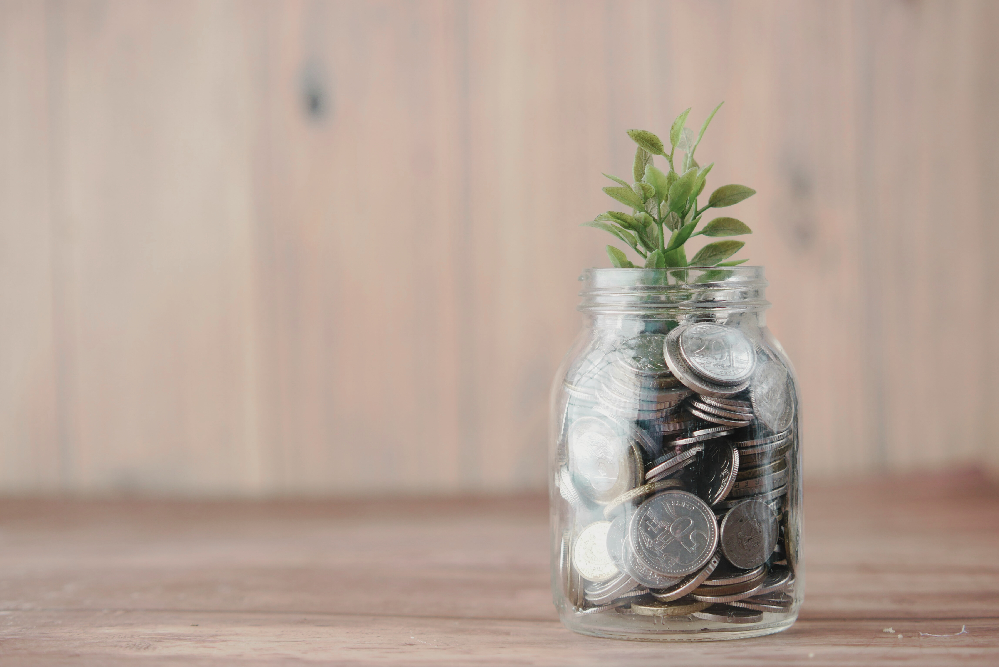

How Much Money Do You Need to Start Investing?
One of the biggest questions for beginners is: “How much money do I need to start investing?” The truth is, you don’t need a huge sum to begin. Even small amounts can grow into significant wealth over time if you start early and invest consistently.
Start Small: It’s More Important to Begin
Many beginners wait to invest because they think they need thousands of dollars. In reality, you can start with as little as $50 or $100. What matters most is consistency and time in the market, not the initial amount.
Example: If you invest $100 per month in an ETF or mutual fund with an average 7% annual return, after 10 years you could have around $16,500. That’s the power of starting small and staying consistent.
Investment Options Based on Budget
Your starting budget can influence your choice of investment. Here are some beginner-friendly examples:
- Under $100: Micro-investing apps and fractional shares let you invest tiny amounts in stocks, ETFs, or mutual funds.
- $100–$500: You can buy individual ETFs, mutual funds, or start a small brokerage account.
- $500–$1,000: Allows for better diversification across stocks, ETFs, and bonds.
- $1,000+: You can create a balanced portfolio with multiple ETFs, mutual funds, or even individual stocks.
Fractional Investing: Invest Even with Small Amounts
Fractional investing allows you to buy a portion of a stock or ETF share. This means you don’t need to buy an entire share, which might be expensive. It’s perfect for beginners with limited funds.
Example: If a single share of Apple costs $200, you can buy 0.25 shares for $50 using a fractional investing platform. This allows you to start investing immediately without waiting to save thousands.
Start With ETFs or Mutual Funds
ETFs and mutual funds are great for beginners because they allow you to diversify even with small amounts. You can invest in hundreds of stocks or bonds in one purchase, reducing your risk.
Example: Investing $100 in an S&P 500 ETF gives you exposure to 500 companies, providing instant diversification with minimal money.
How Much Should You Aim For?
While there’s no fixed amount, a good starting point is whatever you’re comfortable investing without affecting your emergency savings or daily expenses. Beginners can start with $50–$200 per month and gradually increase as they learn and gain confidence.
- Consistency matters more than the initial amount.
- Automate monthly contributions to stay disciplined.
- Focus on long-term growth rather than short-term gains.
Practical Examples
Let’s look at two realistic beginner scenarios:
- Scenario 1: Jane starts with $50/month in a diversified ETF. After 10 years at 7% annual growth, she could have about $8,200.
- Scenario 2: John starts with $200/month in a mix of ETFs and mutual funds. After 10 years at 7% annual growth, he could have around $32,900.
Both scenarios show that even small, consistent investments can grow significantly over time.
Tips for Beginners
- Start with money you can afford to invest.
- Focus on regular contributions instead of waiting for a “perfect” amount.
- Consider automated investment plans to build consistency.
- Diversify to reduce risk and increase growth potential.
- Keep learning and reviewing your investments periodically.
Summary
You don’t need thousands of dollars to start investing. Even small amounts, invested consistently over time, can grow into substantial wealth. Focus on starting today, choose beginner-friendly options like ETFs or mutual funds, and let time and compounding work in your favor.
👉 Remember: The best time to start investing was yesterday. The second-best time is today. Start with what you have, stay consistent, and watch your money grow.